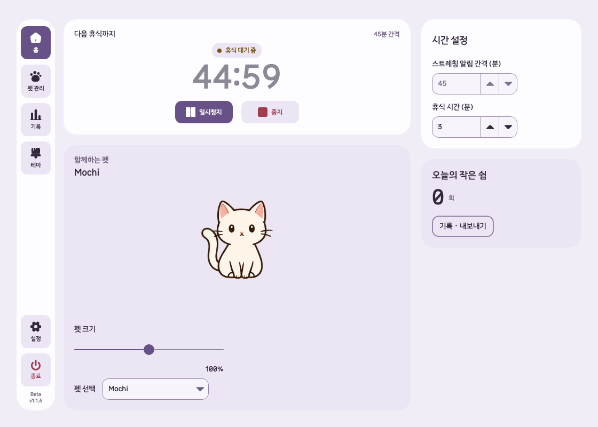

A friend
in every form.
이미지·GIF·MP4
그리고 3D(GLB).


Take a look around
작은 쉼을,
내 방식으로.

실제 앱 화면 · Beta v1.1.3 개발본
쉬어 간 순간을
다시 살펴봐요.
휴식 기록 · Beta v1.1.3 개발본
Unfold for your desktop
Your next pause?
With Unfold.
Windows 10 이상 · macOS 13 이상
테스트 기준가 · 세금 별도
4,900원
정식 판매 전이며 실제 청구되지 않습니다.
Beta는 이용 코드를 받은 테스터가 사용할 수 있습니다.